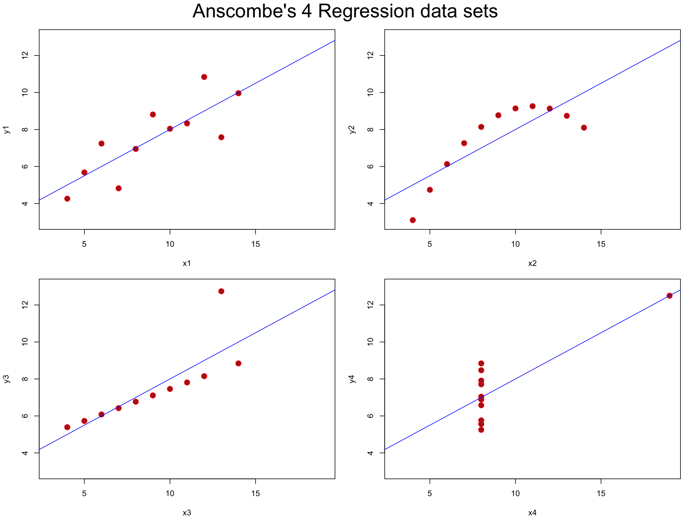
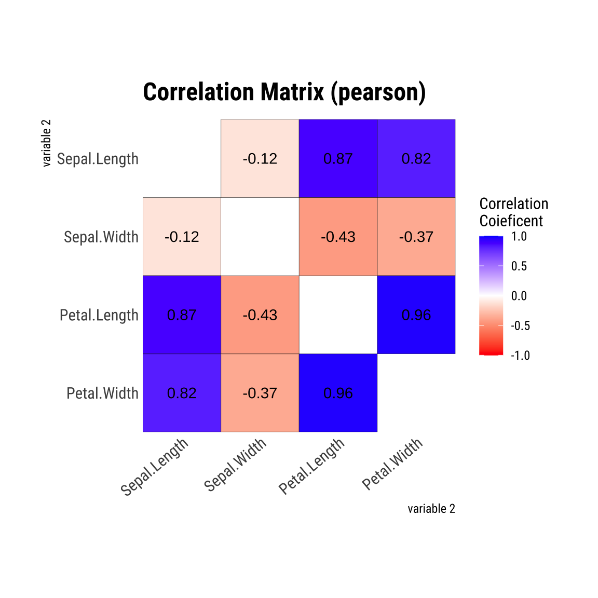
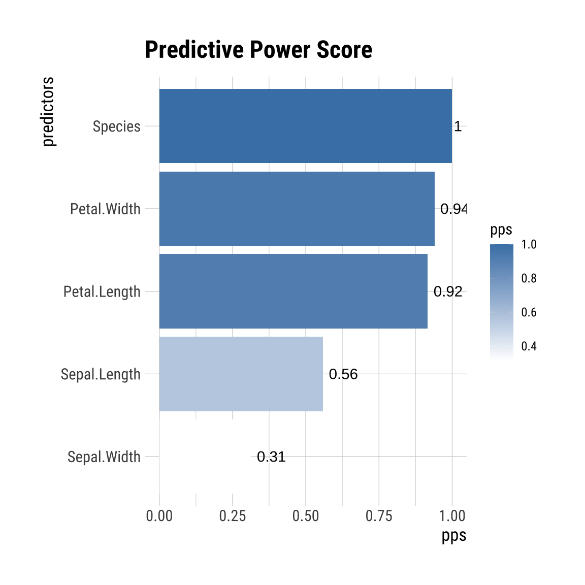
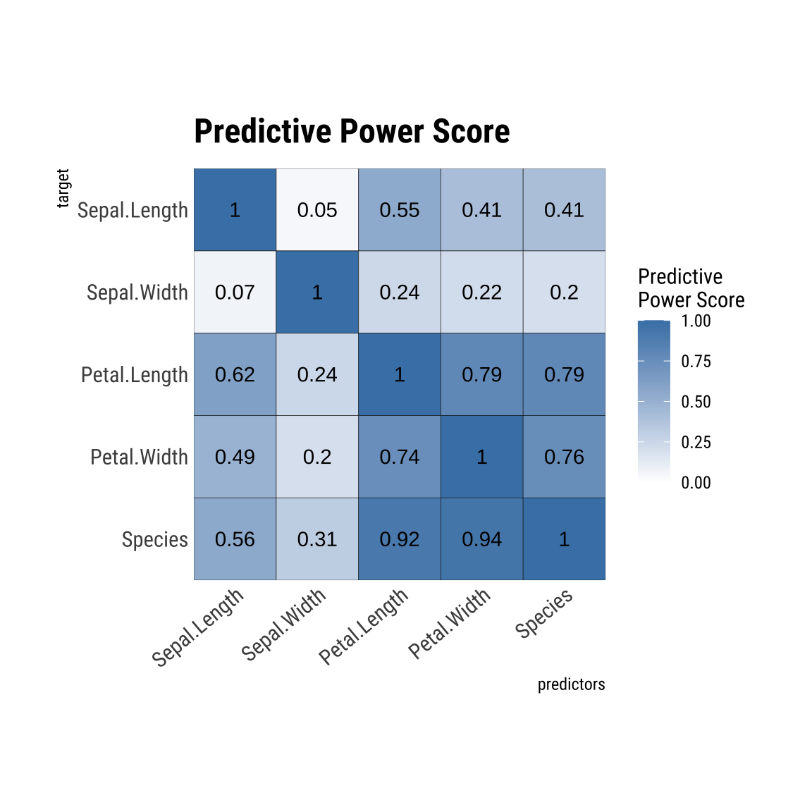

들어가기
최근 데이터 분석 필드의 EDA에서 유용하게 사용되고 있는 예측력 점수 를 dlookr 패키지에 추가했습니다. 이제는 EDA 과정이 더욱더 풍성해지게 되었습니다.유용하게 사용할 수 있도록 개념과 사례를 살펴보고자 합니다.
상관관계에 대하여
상관관계와 상관계수
상관관계는 이변량 데이터 사이의 관계를 의미하는 통계학적인 용어입니다. 통상적으로 탐색적 데이터분석(EDA) 과정에서 변수간의 선형적인 관계를 살펴볼 때 사용합니다. 즉, 상관관계를 파악하는 것이죠. 이것은 절대로 인과관계가 아닙니다.
상관관계는 상관계수(Correlation Coefficient)를 이용해서 판단합니다. 일반적으로 상관계수라고 부르는 것은 수치변수간에 계산된 피어슨 상관계수(Pearson Correlation Coefficient)로, 두 변수간의 선형적인 관계를 판단하도록 도와줍니다. 아시는 것처럼, 이 상관계수는 -1 ~ 1의 값을 가지며, -1은 완벽한 음의 선형 상관관계, 1은 완벽한 양의 선형 상관관계를 의미합니다. 0은 선형 상관관계가 없음을 의미합니다.
피어슨의 상관계수 \(r_{XY}\)는 다음과 같이 계산됩니다.
\(r_{XY} = {공분산_{XY} \over 표준편차_X \cdot 표준편차_Y}\)
\(r_{XY} = {\sum_{i=1}^n(X_i - \bar{X})(Y_i - \bar{Y}) \over \sqrt{\sum_{i=1}^n(X_i - \bar{X})^2} \cdot \sqrt{\sum_{i=1}^n(Y_i - \bar{Y})^2} }\)
다음 이미지는 피어슨의 상관계수(이하 상관계수)별로 두 변수의 관계를 나타내는 이미지입니다.
Figure 1: 다양한 상관계수별 관계, https://en.wikipedia.org/wiki/Correlation 발췌1
이 이미지로 몇 가지 사실에 대해서 생각해 봅니다.
- 첫째 줄은 상관계수에 대한 상관관계를 잘 설명해줍니다. 상관계수가 양수와 음수, 그리고 0인 경우의 관계를 잘 설명해줍니다.
- 특히 상관계수가 -1과 1일 경우에는 X-Y의 유클리드 좌표에서 기울기가 -1과 1로 보여집니다.
- 기울기가 1이라는 것은 X의 값이 증가할 때, Y의 값도 똑같이 크기만큼 증가함을 의미합니다.
- 기울기가 -1이라는 것은 X의 값이 1 증가할 때, Y의 값은 똑같은 크기로 감소함을 의미합니다.
- 그러나 상관계수는 기울기가 아닙니다. 그러나 간혹 기울기로 착각하는 분들이 있습니다.
- 둘째 줄은 모든 사례가 상관계수가 -1 또는 1인 경우의 사례입니다.
- 기울기가 -1이거나 1처럼 보이지 않습니다.
- 상관계수의 값이 -1이거나 1인 경우는 모든 데이터들이 좌표에서 직선상에 분포함을 의미합니다.
- 셋째 줄은 모든 사례의 상관계수가 0인 사례입니다.
- 그러나 상관계수가 0이지만 무상관 관계라 보기 어렵습니다.
- 비선형관계이지만 유클리드 좌표에 표현된 분포는 두 변수간의 모종의 관계가 있음을 암시합니다.
이상을 종합하면, 상관계수는 선형 관계를 설명하는 통계량임을 알 수 있습니다. 그러므로 상관계수가 두 변수간의 관계를 살펴보는 만능 도구는 아닙니다.
그 이유는,
- 비선형 관계를 설명하지 못합니다.
- 수치형 변수가 아닌 범주형 변수의 관계를 설명하지 못합니다.
상관계수와 회귀분석
피어슨 상관계수는 단순 선형회귀분석(Simple Linear Regression Analysis)과 깊은 관계가 있습니다.
상관계수의 제곱값은 다음과 같이 회귀방정식이 직선인 회귀직선(regression straight line)을 의미하는, 단순 선형회귀분석의 결정계수의 값과 같습니다.
\(y = \beta_0 + \beta_1x\)
그러므로 상관계수의 절대값이 1인 것은 모든 데이터들이 회귀직선에 분포하는 것을 의미하며, 회귀식의 오차가 없는 결정계수가 1인 모형이 됩니다.
상관계수와 단순 선형회귀분석은 비선형 분포를 갖는 데이터를 설명할 수 없으므로, 우리는 데이터 분석 과정에서 상관 계수와 회귀식을 너무 맹신하면 안됩니다. 이러한 오류를 줄이기 위해서는 시각화를 통해서 변수들의 관계를 먼저 이해해야 합니다.
F. J. Anscombe2의 “Graphs in statistical analysis”에는 가상의 데이터로 이 문제를 다루고 있습니다. R에는 anscombe라는 데이터 프레임으로 이 데이터를 제공하고 있습니다. 이 데이터로 이 이슈를 바라봅니다.
anscombe 데이터 프레임은 다음과 같습니다.
anscombe
x1 x2 x3 x4 y1 y2 y3 y4
1 10 10 10 8 8.04 9.14 7.46 6.58
2 8 8 8 8 6.95 8.14 6.77 5.76
3 13 13 13 8 7.58 8.74 12.74 7.71
4 9 9 9 8 8.81 8.77 7.11 8.84
5 11 11 11 8 8.33 9.26 7.81 8.47
6 14 14 14 8 9.96 8.10 8.84 7.04
7 6 6 6 8 7.24 6.13 6.08 5.25
8 4 4 4 19 4.26 3.10 5.39 12.50
9 12 12 12 8 10.84 9.13 8.15 5.56
10 7 7 7 8 4.82 7.26 6.42 7.91
11 5 5 5 8 5.68 4.74 5.73 6.89상관계수
anscombe의 네 쌍의 변수에 대해서 dlookr 패키지의 correlate()로 상관계수를 구해봅니다.
library(dplyr)
tab_corr <- dlookr::correlate(anscombe) %>%
mutate(num1 = stringr::str_extract(var1, "[0-9]")) %>%
mutate(num2 = stringr::str_extract(var2, "[0-9]")) %>%
filter(num1 == num2) %>%
filter(as.integer(var1) < as.integer(var2)) %>%
select(-num1, -num2)
tab_corr %>%
rename("변수 1" = var1,
"변수 2" = var2,
"피어슨 상관계수" = coef_corr) %>%
knitr::kable() %>%
kableExtra::kable_styling(bootstrap_options = c("striped", "hover"))
| 변수 1 | 변수 2 | 피어슨 상관계수 |
|---|---|---|
| x1 | y1 | 0.8164205 |
| x2 | y2 | 0.8162365 |
| x3 | y3 | 0.8162867 |
| x4 | y4 | 0.8165214 |
네 쌍의 x와 y 변수의 상관계수는 정확이 일치하지는 않지만, 모두 약 0.816로 동일합니다.
회귀분석
이번에는 네 쌍의 데이터에 대해서 단순 선형회귀분석을 수행해봅니다. 그리고 결정계수와 상관계수의 제곱 값을 비교해 봅니다.
fit_lm <- tab_corr %>%
NROW() %>%
seq() %>%
purrr::map(
function(x) {
formula(glue::glue("{tab_corr$var2[x]} ~ {tab_corr$var1[x]}")) %>%
lm(data = anscombe)
}
)
tab_fit <- fit_lm %>%
seq() %>%
purrr::map_df(
function(x) {
pearson <- tab_corr$coef_corr[x]
pearson.squared <- pearson ^ 2
term_list <- broom::tidy(fit_lm[[x]]) %>%
select(estimate) %>%
unlist()
r.squared <- broom::glance(fit_lm[[x]]) %>%
select(r.squared) %>%
pull()
tibble::tibble(
formula = glue::glue("{tab_corr$var2[x]} ~ {tab_corr$var1[x]}"),
pearson = pearson,
pearson.squared = pearson.squared,
slope = term_list[2],
intercept = term_list[1],
r.squared = r.squared)
}
)
tab_fit %>%
rename("모델 포뮬러" = formula,
"상관계수" = pearson,
"상관계수의 제곱" = pearson.squared,
"회귀식의 계수" = slope,
"회귀식의 절편" = intercept,
"결정계수" = r.squared) %>%
knitr::kable() %>%
kableExtra::kable_styling(bootstrap_options = c("striped", "hover")) %>%
kableExtra::add_header_above(c(" ", "상관관계" = 2, "회귀분석" = 3))
| 모델 포뮬러 | 상관계수 | 상관계수의 제곱 | 회귀식의 계수 | 회귀식의 절편 | 결정계수 |
|---|---|---|---|---|---|
| y1 ~ x1 | 0.8164205 | 0.6665425 | 0.5000909 | 3.000091 | 0.6665425 |
| y2 ~ x2 | 0.8162365 | 0.6662420 | 0.5000000 | 3.000909 | 0.6662420 |
| y3 ~ x3 | 0.8162867 | 0.6663240 | 0.4997273 | 3.002454 | 0.6663240 |
| y4 ~ x4 | 0.8165214 | 0.6667073 | 0.4999091 | 3.001727 | 0.6667073 |
상관계수의 제곱이 정확히 회귀분석의 결정계수와 일치함을 확인할 수 있습니다. 그러므로 상관계수는 선형관계를 갖는 두 수치변수의 단순 회귀분석의 결과를 어느정도 가늠할 수 있습니다.
시각화
플롯을 그려 네 쌍의 데이터에 대한 분포를 파악합니다. 파란색의 직선은 회귀직선입니다.
par(mfrow = c(2, 2), mar = 0.1 + c(4,4,1,1), oma = c(0, 0, 2, 0))
fit_lm %>%
seq() %>%
purrr::walk(
function(x) {
formula(glue::glue("{tab_corr$var2[x]} ~ {tab_corr$var1[x]}")) %>%
plot(data = anscombe, col = "red", pch = 21, bg = "firebrick", cex = 1.5,
xlim = c(3, 19), ylim = c(3, 13))
abline(fit_lm[[x]], col = "blue")
}
)
mtext("Anscombe's 4 Regression data sets", outer = TRUE, cex = 2)

네 쌍의 분포를 통해서 첫째 분포는 선형관계에서 상관계수와 단순 선형회귀분석은 어느 정도 의미가 있으며, 셋째 분포는 상관계수와 단순 선형회귀분석는 이상치(outlier)에 영향을 받는, 로버스트한 분석 방법이 아님을 알려 줍니다. 마지막으로 둘째, 넷째 분포는 상관계수와 단순 선형회귀분석은 비선형 관계를 설명하지 못한다는 맹점을 보여줍니다.
그럼에도 불구하고 데이터 분석 과정에서 변수간의 관계를 파악하기 위해서 상관계수를 널리 사용합니다. 일반적으로 다변량 변수에 대한 데이터 분석을 수행하므로, 상관행렬을 반들어 한 눈에 여러 변수들간의 관계를 파악합니다.
dlookr의 상관관계 분석
dlookr의 correlate()는 변수들의 상관계수를 계산해 줍니다. method 인수에 상관계수의 종류를 지정하는데, 기본값인 “pearson”이 피어슨 상관계수를 계산합니다. 만약 다른 상관계수를 계산하려면 다음과 같은 method 인수를 사용합니다.
- 수치형 변수의 상관계수
- “pearson”: 피어슨의 상관계수
- “kendall”: 켄달의 순위 상관계수
- “spearman”: 스피어만의 순위 상관계수
- 범주형 변수의 상관계수
- “cramer”: 크라머의 V 통계량
- “theil”: 티엘의 U 통계량, 엔트로피 계수
# A tibble: 12 × 3
var1 var2 coef_corr
<fct> <fct> <dbl>
1 Sepal.Width Sepal.Length -0.118
2 Petal.Length Sepal.Length 0.872
3 Petal.Width Sepal.Length 0.818
4 Sepal.Length Sepal.Width -0.118
5 Petal.Length Sepal.Width -0.428
6 Petal.Width Sepal.Width -0.366
7 Sepal.Length Petal.Length 0.872
8 Sepal.Width Petal.Length -0.428
9 Petal.Width Petal.Length 0.963
10 Sepal.Length Petal.Width 0.818
11 Sepal.Width Petal.Width -0.366
12 Petal.Length Petal.Width 0.963summary() 함수는 계산된 결과를 상관행렬(Correlation Matrix)로 요약해서 보여줍니다.
summary(tab_corr)
* correlation type : generic
* variable type : numeric
* correlation method : pearson
* Matrix of Correlation
Sepal.Length Sepal.Width Petal.Length Petal.Width
Sepal.Length 1.0000000 -0.1175698 0.8717538 0.8179411
Sepal.Width -0.1175698 1.0000000 -0.4284401 -0.3661259
Petal.Length 0.8717538 -0.4284401 1.0000000 0.9628654
Petal.Width 0.8179411 -0.3661259 0.9628654 1.0000000그리고 plot() 함수는 계산된 결과를 상관행렬로 시각화합니다.
plot(tab_corr)

예측력 점수를 아시나요?345
예측력 점수 정의
예측력 점수(Predictive Power Score, 또는 PPS)는 변수 x(수치형 또는 범주형)를 사용하여 변수 y(수치형 또는 범주형)를 예측하는데 사용할 수 있는 정도를 0(예측력 없음)과 1(가장 높은 예측력)사이에서 알려주는 정규화된 값입니다.
예측력 점수로 데이터 세트에서 어떤 변수가 다른 변수의 값을 예측하는 데 얼마나 유용한지 파악할 수 있습니다. 일반적으로 1에 가까운 점수(예: 0.8)는 유용한 변수로 간주되며, 이는 해당 변수가 관심있는 변수의 값을 예측할 가능성이 매우 높다는 것을 알려줍니다.
예측력 점수의 특징
예측력 점수의 장점
예측력 점수는 상관계수와 유사성은 존재하지만, 다음과 같은 장점이 있습니다.
- 예측력 점수는 x와 y 사이의 비선형 관계를 감지합니다.
- 예측력 점수는 대칭 인덱스가 아닙니다.
- 즉, PPS(x, y) ≠ PPS(y, x)입니다.
- x가 y를 예측하면 y도 x를 예측한다고 말하지 않습니다 .
- 예측력 점수는 수치형 및 범주형 변수 모두 지원합니다.
예측력 점수의 단점
예측력 점수는 상관계수와 유사성은 존재하지만, 다음과 같은 단점이 있습니다.
- 예측력 점수는 상관행렬처럼 대칭이 아니고 복잡한 패턴을 유발할 수 있으므로,
- 해석이 상대적으로 어려울 수 있습니다.
- 예측력 점수는 계산 다양한 계산 알고리즘을 사용할 수 있으므로,
- 즉, 다양한 머신러닝 알고리즘, 관련 매개변수, 교차검증 체계 및 모델 평가 메트릭을 사용할 수 있으므로,
- 예측 모델의 성능에 영향을 주고, 결국은 예측력 점수에 영향을 주어,
- 동일한 결과를 재현할 수 없을 수 있습니다.
- 예측력 점수는 상관계수에 비해서 더 많은 계산 시간을 소비합니다.
예측력 점수의 계산
예측력 점수는 이름에서도 알 수 있듯, 예측을 목적으로 모든 유형의 변수에 적용할 수 있는 비대칭 비선형 지수를 계산합니다. 그러므로 예측력 점수의 계산을 위해서는 변수 y를 예측하는 지도학습 모델 적합해야 합니다. 지도학습 모델의 유형은 다음과 같습니다.
- 범주형 변수 y를 예측하기 위해서는 분류 모델(Classification)을 사용합니다.
- 수치형 변수 y를 예측하기 위해서는 회귀분석 모델(Regression)을 사용합니다.
사전에 예측 모델을 적합을 수행하므로 예측력 점수 계산은 많은 연산 시간을 소비합니다. 그리고 알고리즘의 종류에 따라 그 값이 다소 상이할 수 있습니다.
예측 모델
일반적으로 예측력 점수는, 이상치 및 부족한 전처리에 로버스트한 의사결정 트리(Decision Trees) 알고리즘을 사용합니다. 모델을 적합하는 목적이 아니므로, 연산의 비용이 높은 성능 좋은 예측모델을 사용지는 않습니다. 요지는 연산의 비용이 높지 않으면서, 예측의 정확도를 어느 정도 담보하는 모델이 유용합니다.
dlookr은 ppsr6 패키지를 래핑하여, 예측력 점수를 구현합니다. 즉, 내부 처리는 ppsr 패키지가 수행합니다.
ppsr 패키지는 예측력 점수를 계산할 때, 다음과 같은 모델을 사용합니다.
- 범주형 변수 예측
- Classification
- 이진분류 : glm 모델 사용
- 다진분류 : raprt 패키지의 tree 모델 사용
- 수치형 변수 예측
- Regression
- lm 모델 사용
평가 지표와 예측력 점수
예측력 점수를 구하기 위한 예측 모델의 모델 평가 메트릭은 다음의 메트릭을 사용합니다.
- 범주형 변수 예측
- F1
- 수치형 변수 예측
- RMSE(Root Mean Square Error) 혹은,
- MAE(Mean Absolute Error)
예측력 점수를 계산해 보겠습니다.
먼저 평가 지표를 구하기 위해서는 선택한 알고리즘으로 두 개의 모델을 적합합니다.
- \(n\)개의 predictor 즉, 변수 \(x_1, x_2, x_3, \cdots, x_n\)으로 \(y\)를 예측하는 모델 \(M\)을 적합합니다.
- 그리고, 예측력 점수를 구하려는 변수 \(x_i\)로 나이브(navie) 모델 \(m_i\)를 적합합니다.
예측력 점수 PPS는 다음과 같이 계산합니다.
범주형 변수를 예측하는 경우에는, 모델 \(M\)의 F1을 \(F1_M\), 모델 \(m_i\)의 F1을 \(F1_{m_i}\)이라 할 때, 다음처럼 계산합니다.
\(PPS_i = {(F1_M - F1_{m_i}) \over (1 - F1_{m_i})}\)
범주형 변수를 예측하는 경우에는, 모델 \(M\)의 MAE를 \(MAE_M\), 모델 \(m_i\)의 MAE를 \(MAE_{m_i}\)이라 할 때, 다음처럼 계산합니다.
\(PPS_i = 1 - {MAE \over mae_i}\)
예측력 점수의 활용
예측력 점수는 다음과 같이 활용됩니다.
- 데이터에서 패턴 찾기
- 상관행렬의 대안으로 PPS 행렬을 사용하여 데이터의 선형 또는 비선형 패턴을 감지하고 이해할 수 있습니다.
- 변수 선택
- 예측모델 개발 과정에서의 변수선택(Feature Selection)에 활용합니다. 예측력 점수가 높은 변수를 선택하여, 모델을 개발할 수 있습니다.
- 정보 누수(information leakage)7 탐지
- 변수들간의 정보누수를 탐지합니다.
- 데이터 정규화
- 예측력 점수는 정규화된 엔터티이므로 데이터 정규화에도 도움이 됩니다.
dlookr에서의 예측력 점수
상관행렬 플롯 그리기
iris 데이터셋의 사완행렬 플롯은 다음과 같이 dlookr 패키지의 correlate()와 plot()으로 쉽게 그릴 수 있습니다. 상관행렬은 수치형 변수에 한해서 만들어지므로, Species 변수는 포함되지 않았습니다.
상관행렬은 대각선을 기준으로 두 값이 대칭을 이룹니다. 즉, Sepal.Length과 Sepal.Width의 상관계수와 Sepal.Width와 Sepal.Length의 상관계수는 -0.12로 동일합니다.
예측력 점수 계산하기
예측력 점수는 pps()로 계산합니다. 그런에 예측력 점수를 계산하기 위해서는 많은 컴퓨팅 연산이 필요합니다. 그만큼 계산하는데 오랜 시간이 걸릴 수 있음을 의미합니다. 그래서 연산 과정에서으 병렬처리를 지원합니다. do_parallel = TRUE로 병렬처리를 활성화합니다.
tab_pps <- pps(iris, do_parallel = TRUE)
tab_pps
x y result_type
1 Sepal.Length Sepal.Length predictor and target are the same
2 Sepal.Width Sepal.Length predictive power score
3 Petal.Length Sepal.Length predictive power score
4 Petal.Width Sepal.Length predictive power score
5 Species Sepal.Length predictive power score
6 Sepal.Length Sepal.Width predictive power score
7 Sepal.Width Sepal.Width predictor and target are the same
8 Petal.Length Sepal.Width predictive power score
9 Petal.Width Sepal.Width predictive power score
10 Species Sepal.Width predictive power score
11 Sepal.Length Petal.Length predictive power score
12 Sepal.Width Petal.Length predictive power score
13 Petal.Length Petal.Length predictor and target are the same
14 Petal.Width Petal.Length predictive power score
15 Species Petal.Length predictive power score
16 Sepal.Length Petal.Width predictive power score
17 Sepal.Width Petal.Width predictive power score
18 Petal.Length Petal.Width predictive power score
19 Petal.Width Petal.Width predictor and target are the same
20 Species Petal.Width predictive power score
21 Sepal.Length Species predictive power score
22 Sepal.Width Species predictive power score
23 Petal.Length Species predictive power score
24 Petal.Width Species predictive power score
25 Species Species predictor and target are the same
pps metric baseline_score model_score cv_folds seed
1 1.00000000 <NA> NA NA NA NA
2 0.04632352 MAE 0.6893222 0.6620058 5 1
3 0.54913985 MAE 0.6893222 0.3100867 5 1
4 0.41276679 MAE 0.6893222 0.4040123 5 1
5 0.40754872 MAE 0.6893222 0.4076661 5 1
6 0.06790301 MAE 0.3372222 0.3184796 5 1
7 1.00000000 <NA> NA NA NA NA
8 0.23769911 MAE 0.3372222 0.2564258 5 1
9 0.21746588 MAE 0.3372222 0.2631636 5 1
10 0.20128762 MAE 0.3372222 0.2677963 5 1
11 0.61608360 MAE 1.5719667 0.5971445 5 1
12 0.24263851 MAE 1.5719667 1.1945031 5 1
13 1.00000000 <NA> NA NA NA NA
14 0.79175121 MAE 1.5719667 0.3265152 5 1
15 0.79049070 MAE 1.5719667 0.3280552 5 1
16 0.48735314 MAE 0.6623556 0.3377682 5 1
17 0.20124105 MAE 0.6623556 0.5315834 5 1
18 0.74378445 MAE 0.6623556 0.1684906 5 1
19 1.00000000 <NA> NA NA NA NA
20 0.75611126 MAE 0.6623556 0.1608119 5 1
21 0.55918638 F1_weighted 0.3176487 0.7028029 5 1
22 0.31344008 F1_weighted 0.3176487 0.5377587 5 1
23 0.91675800 F1_weighted 0.3176487 0.9404972 5 1
24 0.93985320 F1_weighted 0.3176487 0.9599148 5 1
25 1.00000000 <NA> NA NA NA NA
algorithm model_type
1 <NA> <NA>
2 tree regression
3 tree regression
4 tree regression
5 tree regression
6 tree regression
7 <NA> <NA>
8 tree regression
9 tree regression
10 tree regression
11 tree regression
12 tree regression
13 <NA> <NA>
14 tree regression
15 tree regression
16 tree regression
17 tree regression
18 tree regression
19 <NA> <NA>
20 tree regression
21 tree classification
22 tree classification
23 tree classification
24 tree classification
25 <NA> <NA>dlookr에 예측력 점수를 계산하는 기능을 추가했습니다만, 엔터프라이즈급의 데이터에 대해서 예측력 점수를 계산하기에는 버겁습니다. 물론 서버급의 장비를 사용하면 수행 시간을 단축할 수 있겠죠. 개인 노트북에서 타이타닉 데이터의 예측력 점수를 계산하는데, 많은 인내를 감내해야 했습니다.
만약에 목표변수 y를 위한 변수 선택을 수행한다면, 다음처럼 target_by()를 사용해서 목표변수 y를 지정하면 수행시간을 절약할 수 있습니다.
pps()로 만든 결과는 “pps” 클래스 객체를 반환합니다. 이 객체는 R의 제너릭 함수인 summary()와 plot()을 지원합니다.
x y result_type pps
1 Sepal.Length Species predictive power score 0.5591864
2 Sepal.Width Species predictive power score 0.3134401
3 Petal.Length Species predictive power score 0.9167580
4 Petal.Width Species predictive power score 0.9398532
5 Species Species predictor and target are the same 1.0000000
metric baseline_score model_score cv_folds seed algorithm
1 F1_weighted 0.3176487 0.7028029 5 1 tree
2 F1_weighted 0.3176487 0.5377587 5 1 tree
3 F1_weighted 0.3176487 0.9404972 5 1 tree
4 F1_weighted 0.3176487 0.9599148 5 1 tree
5 <NA> NA NA NA NA <NA>
model_type
1 classification
2 classification
3 classification
4 classification
5 <NA>class(tab_pps)
[1] "pps" "data.frame"class(target_pps)
[1] "pps" "data.frame"Petal.Length와 Petal.Width의 붓꽃의 품종인 Species를 예측하는 점수가 상당히 높습니다.
예측력 점수 행렬 출력
예측력 점수 행렬은 summary() 함수로 구할 수 있습니다. 그러나 target_by()를 사용한 예측력 점수는 요약된 정보만 제공합니다.
## 전체 변수를 사용한 사례
summary(tab_pps)
* PPS type : generic
* Matrix of Predictive Power Score
- Columns : target
- Rows : predictors
Sepal.Length Sepal.Width Petal.Length Petal.Width
Sepal.Length 1.00000000 0.04632352 0.5491398 0.4127668
Sepal.Width 0.06790301 1.00000000 0.2376991 0.2174659
Petal.Length 0.61608360 0.24263851 1.0000000 0.7917512
Petal.Width 0.48735314 0.20124105 0.7437845 1.0000000
Species 0.55918638 0.31344008 0.9167580 0.9398532
Species
Sepal.Length 0.4075487
Sepal.Width 0.2012876
Petal.Length 0.7904907
Petal.Width 0.7561113
Species 1.0000000## Target 변수를 지정한 사례
summary(target_pps)
* PPS type : target_by
* Target variable : Species
* Model type : classification
* Information of Predictive Power Score
predictors target pps
1 Species Species 1.0000000
2 Petal.Width Species 0.9398532
3 Petal.Length Species 0.9167580
4 Sepal.Length Species 0.5591864
5 Sepal.Width Species 0.3134401예측력 점수 행렬 시각화
plot() 함수로 예측력 점수를 시각화 합니다.
변수 선택을 위해서 만든 target_pps 객체는 다음처럼 막대 플롯을 출력합니다.
plot(target_pps)

EDA를 위해서 만든 tab_pps 객체는 다음처럼 예측력 점수를 타일 플롯으로 출력합니다.
plot(tab_pps)

마무리
예측력 점수가 핫한 아이템인 것 같습니다. 그러나 어찌 보면 새로운 개념은 아닙니다. 그러나 상관관계와 협업하면 EDA가 좀더 탄탄해질 수 있을 것 같습니다.
많은 연산 리소스를 요구하는 것이 흠이지만, 여러분의 EDA에 새로운 바람을 넣어보시는 것이 어떨까요?
Correlation, https://en.wikipedia.org/wiki/Correlation↩︎
Anscombe, Francis J. (1973). Graphs in statistical analysis. The American Statistician, 27, 17–21. doi: 10.2307/2682899.↩︎
RIP correlation. Introducing the Predictive Power Score. https://towardsdatascience.com/rip-correlation-introducing-the-predictive-power-score-3d90808b9598↩︎
Using The Predictive Power Score in R. https://towardsdatascience.com/using-the-predictive-power-score-in-r-26c43d05dc01↩︎
What is Predictive Power Score (PPS). https://machinelearningknowledge.ai/predictive-power-score-vs-correlation-with-python-implementation/↩︎
ppsr: Predictive Power Score. https://cran.r-project.org/web/packages/ppsr/index.html↩︎
정보 누수는 훈련 데이터에서 타겟을 예측하는 변수로 포함되지만, 실제 예측에서는 사용할 수 없는 경우 발생합니다. 이는 심지어 검증 데이터 셋에서도 높은 성능으로 학습되지만, 모델이 실제 배포됐을 때에는 제대로 동작하지 않습니다.↩︎